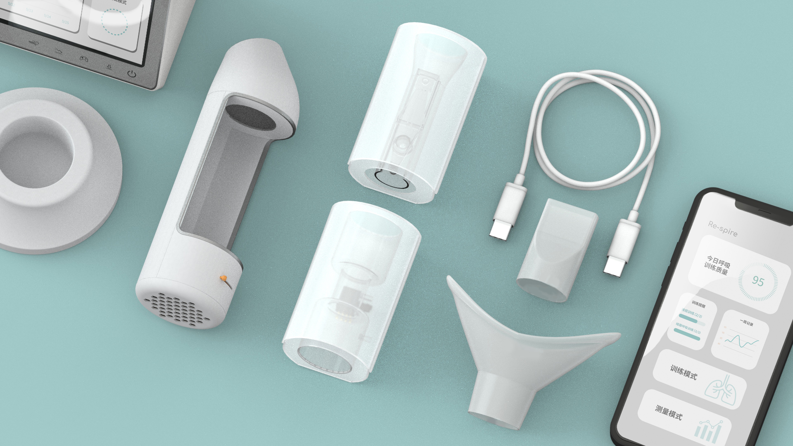

我们应当如何帮助手术病人进行科学、有效且经济的呼吸功能康复训练，使他们的身体机能得到更好的恢复？
How can we help patients after surgury carry out scientific, effective and economical respiratory rehabilitation training, so as to better recover their physical function?


流通过程和配件
Circulation process and accessories
界面与说明书
Interface and instructions

模型和测试
Model and test